Die Abbildungen 22 bis 37 zeigen alle wesentlichen Herstellungsschritte einer Gehörschutz-Otoplastik einschließlich zugehöriger Funktionskontrolle.
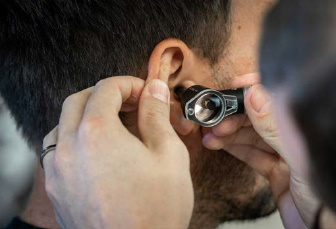
Abb. 22 Otoskopie
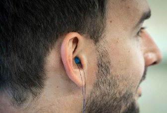
Abb. 23 Tamponade (Trommelfellschutz)
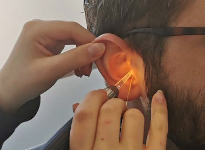
Abb. 24 Positionierung der Tamponade mit Leuchtstab
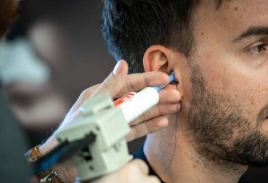
Abb. 25 Einspritzen der Abformmasse in den Ohrkanal
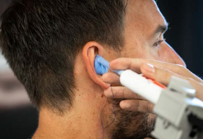
Abb. 26 Einspritzen der Abformmasse in die Concha
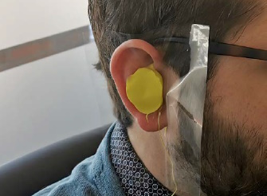
Abb. 27 Aushärten der Abformmasse
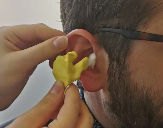
Abb. 28 Herauslösen der Abformmasse
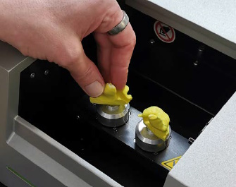
Abb. 29 Positionierung der Abformungen im Laserscanner
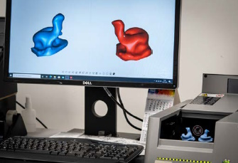
Abb. 30 Übertragung der gescannten Abformungen auf den PC
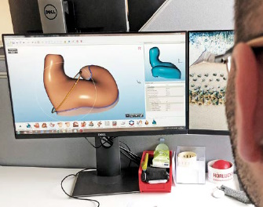
Abb. 31 Bearbeitung mittels CAD-Software
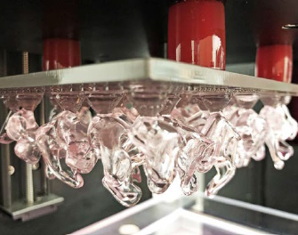
Abb. 32 3D-Drucke bei Entnahme aus dem Drucker
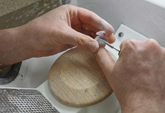
Abb. 33 Manuelle Nachbearbeitung der Otoplastiken
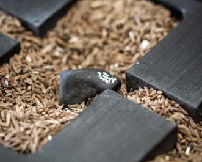
Abb. 34 Laserbeschriftung
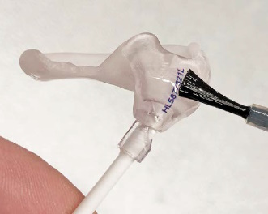
Abb. 35 Oberflächenbehandlung
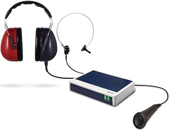
Abb. 36 Funktionskontrolle mittels Audiometrie
Abb. 37 Fertige Gehörschutz-Otoplastik bei Benutzung